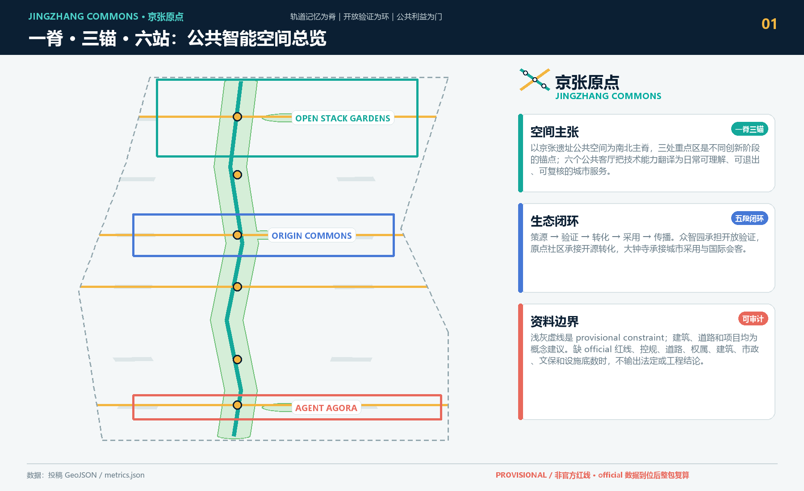
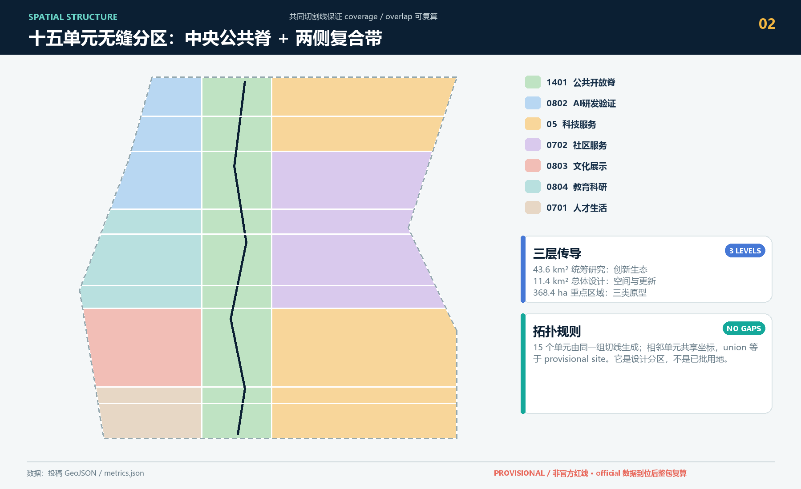
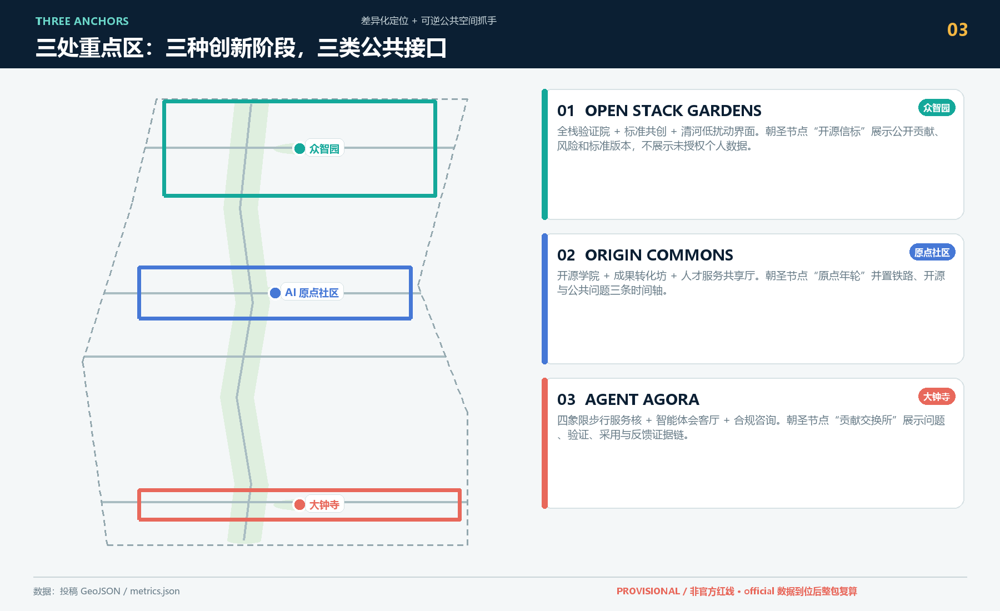
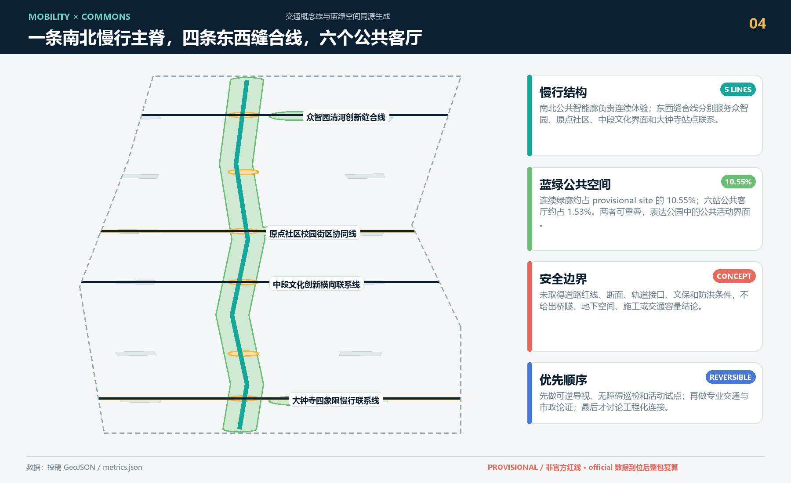
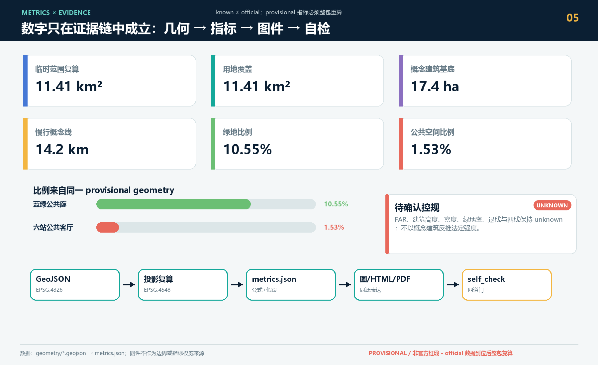

统筹研究范围
面向 43.6 平方公里提出 AI 产业生态、三区两翼协同、未来城市形态和文化叙事。
- AI创新链与人才链
- 全球案例转化机制
- 品牌命名与传播
JINGZHANG COMMONS
面向公共智能的开放城市共生带。以京张铁路遗产与南北公共智能/蓝绿慢行主轴为一脊，以众智园、北京 AI 原点社区和大钟寺为三锚，以六个公共客厅为六站。四条东西缝合线是横向连接系统；全栈验证、开源转化、智能经济是三锚功能分工；蓝绿慢行复合环是专项系统。权威数据仍以 GeoJSON、metrics.json、矩阵和自检结果为准。
总览图先呈现唯一的总体空间结构，再将四条东西缝合线、三锚功能主题和蓝绿慢行专项系统作为下位层级读取。

方案按统筹研究范围、总体设计范围、重点区域范围递进，把产业判断、城市更新和重点片区设计绑定到图层与指标。
面向 43.6 平方公里提出 AI 产业生态、三区两翼协同、未来城市形态和文化叙事。
面向 11.4 平方公里组织城市更新、用地结构、交通市政、京张遗址公园活力带。
面向三处重点片区开展详细设计，说明功能业态、建筑更新、公共空间与交通组织。
三处重点区分别承担全栈验证、开源转化和智能经济主题，并以产业定位、空间动作、交通接口和公共空间抓手形成差异化锚点。
花园型自主创新街区。重点表达国家平台、产业展示、清河文化、对外交通和低碳交往空间。
近校型成果转化街区。重点表达高校源头创新、开源社区、人才服务、拆改留和站点一体化。
城市型智能经济街区。重点表达领军企业、智能体新业态、商业服务、绿地复合利用和路口四象限连通。
场景不是口号，应说明服务对象、空间位置、数据来源、隐私边界、人工复核和运营主体。
面向开发者、企业和高校的成果发布与模型评测节点。
在可控公共空间测试交通、服务和运维智能体。
用公开数据和人工复核识别遗址公园慢行断点。
连接居住、学习、消费、运动和社交服务。
展示标准制定、可信评测和安全治理能力。
支撑清华、北大、中科院成果转化会客与路演。
大钟寺片区的数据资产、智能终端和内容消费展示。
解释分布式能源、端侧算力与公共服务设施融合。
把铁路文脉、中关村创新文化和AI新文化串联。
组织开发者节、场景开放日、竞赛路演和城市体验路线。
compliance_matrix.json 覆盖公告 1.3、1.4、1.5 与 agent.1-agent.6；standard_matrix.json 与 design_depth_matrix.json 证明专业标准和成果深度。
来源见 sources.json、agent_taskbook.json、data/processed/agent_fact_pack.md 和 standards/references。本页不得加载 CDN、远程地图瓦片、外部脚本、外部字体、API 请求或 iframe。
待补控规、道路红线、权属、市政、文保和工程条件必须在 assumptions.json 中列明，并在正文中解释对设计结论的影响。
图件统一服从“一脊三锚六站”：用地与建筑提供空间支撑，三锚图解释功能分工，慢行图解释四条缝合线、六站和蓝绿慢行专项系统。




这些值来自临时范围几何，仅支持方案比选；官方多边形到位后须整包复算。